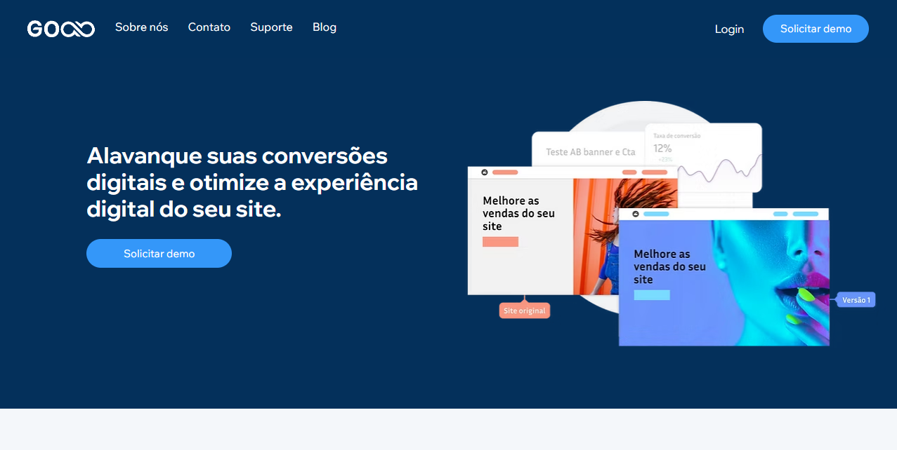

Home>Projetos>Caso
GOAB
Uma plataforma brasileira de Testes A/B feita para todos
O projeto Goab nasceu com a ideia de democratizar os testes A/B no Brasil. Fui responsável por toda a experiência do produto: desde a escolha do nome e logo, até a criação do site, dashboard e ferramentas.
A atuação foi 360º: benchmark com ferramentas como VWO, AB Tasty e CROCT, estrutura de funcionalidades, jornada do usuário, wireframes, UI, fluxos e responsividade.
Tecnologias usadas: Figma, HTML, CSS, JS, React (com devs), testes com usuários, validação com Product Managers.
Acesse o site: www.goab.io
Ano
2024
Scope of Work
Branding
UX Research
UI Design
Product Design
Web Design
Duração
12 semanas
Vamos começar pelo conceito
Reunimos benchmarks, murais de inspiração e fizemos pesquisa com designers e analistas de dados. O nome, logo e identidade foram criados pensando em algo leve, simples e que transparecesse confiança técnica.
Focamos em clareza, autonomia e facilidade para equipes criarem testes A/B sem depender de desenvolvedores. A experiência e usabilidade foram pensadas para acelerar a tomada de decisão baseada em dados.


Problema
Ferramentas estrangeiras possuem interface complexa e alto custo.
Equipes brasileiras não conseguiam testar com autonomia.
Faltava uma opção nacional com suporte e documentação em português.
Solução
Criamos uma plataforma visual, intuitiva e responsiva.
Usuários criam e publicam testes em poucos cliques.
O produto conta com versão gratuita, documentação simples e suporte 100% em PT-BR.
Wireframes e estrutura de navegação
Com base nas funcionalidades levantadas, criamos wireframes para validar o fluxo de criação de teste, dashboard, relatórios e biblioteca de testes.
Wireframes iniciais


Insights de pesquisa
Categoria
Autonomia
"Consigo criar testes A/B sem depender do time de dev"
Categoria
Facilidade
"A interface é bem mais simples do que outras ferramentas"
Categoria
Design
"Gostei da identidade visual leve e moderna"
Categoria
Velocidade
"Criei meu primeiro teste em menos de 10 minutos"
Categoria
Segmentação
"Poder segmentar por URL e dispositivo fez toda diferença"
Categoria
Produto nacional
"Muito bom ter uma opção 100% brasileira com suporte local"
Identidade visual e interface
O logo foi criado explorando o infinito (loop), simbolizando testes constantes. As cores transmitem confiança e tecnologia. Toda a interface foi pensada para um uso objetivo e fluido.
Cores, logos e interface

Responsividade e versão mobile
A plataforma foi pensada para funcionar perfeitamente em dispositivos móveis, com testes sendo criados e visualizados em telas menores com fluidez.